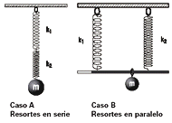

|
NO ME SALEN
PROBLEMAS RESUELTOS DE FÍSICA DEL CBC
|
|

|
| 2.30- Dos resortes de masa despreciable, cuyas
constantes elásticas son k1 y k2, son utilizados
para mantener suspendido un objeto cuya
masa es m. Para las dos configuraciones posibles
que se muestran en el esquema, determinar: |
a- Cuál de los dos soporta una fuerza mayor.
b- Cuál de los dos se alarga más.
c- Cuál es el valor de la constante elástica
equivalente del sistema que forman ambos. (Se
la define como la constante del resorte único, capaz
de reemplazarlos produciendo los mismos
efectos).
NOTA: En el caso B, la carga se distribuye de
modo que la barra quede siempre horizontal. |
 |
|
Ok, problema 2.30... no te tenemos miedo. Sabemos que sos dos problemas en uno, que tu caso A no tiene nada que ver con tu caso B. Te los vamos a resolver de a uno y te vamos a dejar sin dudas de ningún tipo. Y te vas a ir a asustar a otros estudiantes, si todavía te quedan ganas... porque te vamos a hacer papilla.
Lo primero que vamos a hacer con vos es aclararte, porque te la das de confuso, pero sos una mantequita. Y vas a ver que con el modo que nosotros te aclaramos, ya nos queda el resultado casi a punto de salir. Te vamos a hacer esquema, ¡gil!
Empezamos con tu caso A, los resortes en serie.
|
 |
|
|
A la izquierda pusimos los dos resortes R1 y R2 colgando del techo pero tal como los compramos en la ferretería, o sea, ahí no están estirados para nada. Los compramos de igual largo para simplificarnos un poco las cosas, pero son diferentes, en el sentido que uno es más "fuerte" que el otro (no importa cuál); k1 y k2 son diferentes.
Después nos ponemos a buscar entre todos los estantes del ferretero un resorte que sea equivalente al conjunto R1 y R2 unidos de esa manera, o sea, uno a continuación del otro, o como dicen los físicos, en serie. Que sea equivalente significa que si al conjunto le colgamos un cuerpo y se estira, al colgarle el mismo peso al equivalente, éste se estire lo mismo.
Tal como nos lo muestra el esquema Δx1 + Δx2 = Δxes. Ya tenemos una ecuación, que en esto de la física vale oro. Pero igual no alcanza, lo cual no nos extraña, porque no hay problema de dinámica donde no sea necesario un DCL. Acá va. |
|
 |
Bueno, a falta de uno, hice tres DCLs. El de la izquierda más que un cuerpo se trata de la atadura entre el resorte 1 y el 2. Esa atadura está en reposo. Su aceleración vale cero.
El segundo es el cuerpo colgado del resorte 2. También está en reposo, más bien.
El tercero es el mismo cuerpo, pero ahora colgado del resorte equivalente a la serie. También en reposo, porsupu.
F1 = F2 ; F2 = P ; Fes = P
De todo esto se puede asegurar que
F1 = F2 = Fes = P
|
|
|
Por otro lado
F1 = k1 Δx1 ; F2 = k2 Δx2 y Fes = kes Δxes
P = k1 Δx1 ; P = k2 Δx2 y P = kes Δxes
de cada una de estas tres ecuaciones despejemos el estiramiento
Δx1 = P / k1
Δx2 = P / k2
Δxes = P / kes
estas tres las metemos en la primera ecuación, esa que te dije que valía oro... |
|
|
|
| Sacamos factor común P, cancelamos... Y ya llegamos a la primera respuesta |
|
|
|
| También podemos escribirlo así: |
|
|
|
Que me gusta más.
No dejes de leer la discusión del problema que voy a analizar los dos resultados juntos. Ahora vamos a hacer el caso B, de los resortes en paralelo.
Lógicamente voy, a proceder de la mimsa manera. |
|
 |
|
A la izquierda entán los tres resortes. R1 y R2 son los mismos de antes, pero el tercero lo tuve que buscar en otro estante diferente. Es el resorte equivalente del conjunto R1/R2 pero dispuestos de esta otra manera, uno al lado del otro, que los físicos llaman en paralelo. Acá es todavía más claro que antes en qué consiste la equivalencia: colgándole el mismo cuerpo el equivalente se estira lo mismo que el conjunto.
Queda clarísimo, que Δx1 = Δx2 = Δxep... oro puro. Vamos al DCL. |
|
 |
En cada caso tenemos un equilibrio, por lo tanto podemos escribir
F1 + F2 = P
Fep = P
Con lo que deducimos que
F1 + F2 = Fep [1]
Y no olvidamos que
F1 = k1 Δx1 = k1 Δx
F2 = k2 Δx2 = k2 Δx
Fep = kes Δxep = kep Δx
meto estas igualdades en la ecuación [1] |
|
|
k1 Δx + k2 Δx = kep Δx
Ahora saco factor común Δx en el primer miembro y lo cancelo con el del segundo, así arribo al resultado del caso B. |
|
|
|
| |
|
| |
| DISCUSION: Fijate los resultado y comparalos. El equivalente del paralelo lo saqué del estante de los resortes fuertes, en cambio el resorte equivalente de la serie lo saqué del estante de los resortes debiluchos. Su constante es menor que la menos de las constantes entre los resortes que estén en la serie. En cambio la constante elástica de un resorte equivalente de un paralelo siempre es mayor que la más grande de las constantes de los resortes que integren el paralelo. |
|
 |
| DESAFIO: Tengo tres resortes: A, B y C de contantes elásticas kA, kB y kC ? que valen respectivamente 100, 250 y 600 N/m, ¿cuántos "resortes equivalentes" puedo armarme y cuánto valen sus constantes? |
|
| Algunos derechos reservados.
Se permite su reproducción citando la fuente. Importantísimo: el mate es amargo, si le ponés algo que lo endulce se convierte en un brebaje asqueroso, comprender esta realidad aumenta la probabilidad de entender la Física en un 47,2%. Última actualización nov-06. Buenos Aires, Argentina. |
|
|
|